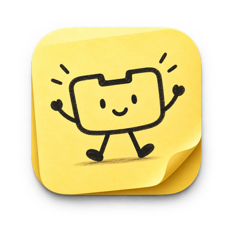

StickyNotch
A tiny, lightweight app that turns your Mac's notch into a little desk: music, sticky notes, your clipboard and more, right where you already look.
Open the DMG and drag StickyNotch into Applications. The first time you open it, macOS will say it can't verify the app: go to System Settings → Privacy & Security and click Open Anyway. After that it updates itself.
What it does
Hover over the notch and it opens into a small panel. Move away and it tucks itself back in.
Music player
See what's playing in Spotify or Apple Music, scrub, skip, and see which AirPods or speakers it's on. Spinning vinyl optional.
Sticky notes
Up to five notes in the notch. Lock one to keep it open (handy in interviews) and drag it wider when you need room.
Clipboard history
Your last 20 copied texts, one click to copy again. Kept in memory only, and passwords are skipped.
File shelf
Drop files on the notch to park them, preview with Quick Look, drag them out where you need them.
Next meeting
A countdown to your next meeting in the closed notch, with a one-click Join for Zoom, Meet and Teams.
Claude Code
See when Claude is working, when it's asked you a question, and when it's done, right in the notch.
Built to stay out of the way: about 50 MB of memory and ~0% CPU while idle.